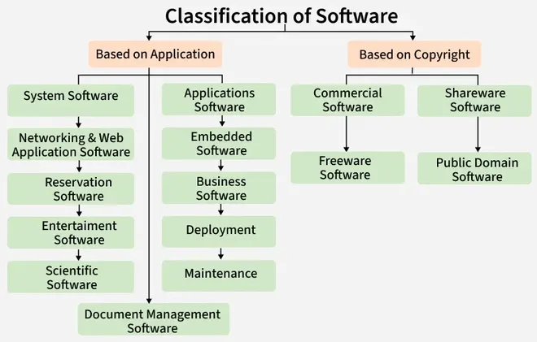
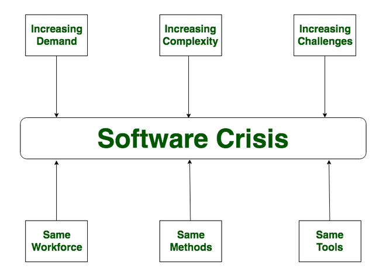
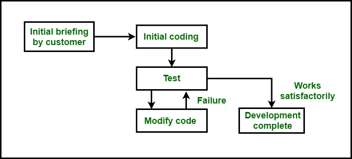
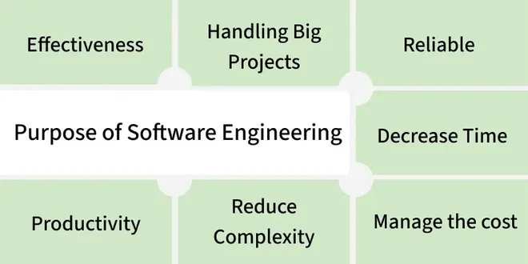
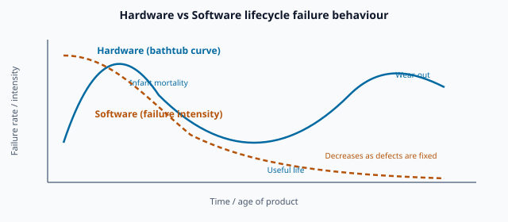

1. Introduction & Fundamentals
- Introduction to Computer-based System Engineering
1.1 Introduction to Software Engineering
Software Engineering is the systematic, disciplined, and quantifiable process of designing, developing, testing, and maintaining software. It applies engineering principles and methods so that software products are high-quality, reliable, and maintainable, especially when systems are large and complex.
To understand the term, split it into two parts. Software is a program or set of programs containing instructions that provide desired functionality. Engineering is the process of designing and building something that serves a purpose efficiently and cost-effectively. Software Engineering therefore means building software in a planned, repeatable way — not by trial-and-error coding alone.

Key principles of Software Engineering
- Modularity: Divide software into small, independent parts that are easier to develop, test, and maintain.
- Abstraction: Show only what is necessary; hide internal implementation details.
- Encapsulation: Keep data and related functions together and protect them from outside access.
- Testing: Verify that software works correctly and meets requirements.
- Maintenance: Regularly update software to fix bugs, improve features, and enhance security.
- Design patterns: Reuse proven solutions to recurring design problems.
- Agile methodologies: Develop in small steps with frequent feedback and flexibility.
- CI/CD: Frequently merge code changes and automatically deploy updates.
What software engineers do
Software engineers work in teams to deliver solutions that meet customer or business needs. Core responsibilities include:
- Requirement analysis — collaborating with stakeholders to understand needs.
- Design and development — writing well-structured, maintainable code.
- Testing and debugging — unit tests, integration tests, and defect fixing.
- Code review — improving quality and sharing knowledge across the team.
- Maintenance — updating systems, fixing bugs, and adding features.
- Documentation — code comments, API docs, and design documents.
Q: Define Software Engineering and explain why a systematic approach is needed for large projects.
Model answer points:
- Definition: systematic application of engineering to design, develop, test, and maintain software.
- Goal: quality, reliability, maintainability, on-time and within-budget delivery.
- Without SE: ad-hoc coding leads to cost overruns, delays, and poor quality (see §1.6 Software Crisis).
- SE uses processes, standards, testing, and project management to control complexity.
1.2 Introduction to Computer-based System Engineering
Computer-based System Engineering (CBSE) is an engineering discipline concerned with designing and building complete systems in which software plays a central role but is not the whole picture. A computer-based system includes hardware, software, people, data, procedures, and documentation working together to achieve an organisational or user goal.
Software Engineering is a part of CBSE. When you engineer a hospital information system, an air-traffic control system, or a university portal, you must consider networks, servers, databases, user interfaces, staff training, operational procedures, and legal compliance — not just source code.
Dual role of software (GFG)
Software plays two distinct roles in industry:
1. Software as a product
- Delivers computing potential across networks of hardware.
- Enables hardware to provide expected functionality.
- Acts as an information transformer — produces, manages, acquires, modifies, displays, or transmits information.
2. Software as a vehicle for delivering a product
- Provides system functionality (e.g., payroll system).
- Controls other software (e.g., operating system controlling applications).
- Helps build other software (e.g., compilers, IDEs, testing tools).
Example — University course portal
A course notes website is a computer-based system: software (HTML, CSS, JS, hosting), hardware (servers, user devices), people (students, author), data (lecture content), procedures (how to navigate topics), and documentation (syllabus mapping). CBSE ensures all these elements are designed and integrated coherently.
Q: What is Computer-based System Engineering? How does it relate to Software Engineering?
Model answer points:
- CBSE = engineering of complete systems (hardware + software + people + data + procedures).
- SE = disciplined development of the software component within such systems.
- Software has dual role: as product itself and as vehicle/tool for other products.
- Outline syllabus item "Introduction to Computer-based System Engineering" covers this systems view.
1.3 What is Software / Classification of Software
A program is a step-by-step set of instructions written in a programming language to perform a specific task on a computer. Software is broader: a program together with proper documentation (requirements, design, coding, testing records) and user/operating manuals. In short:
Software = Program + Documentation (+ licensing for commercial products)
Program vs Software Product
| Parameter | Program | Software Product |
|---|---|---|
| Definition | Instructions to achieve a specific task | Program + documentation + licensing for commercial use |
| Scope | Limited to a specific problem | Broader — solves real-world problems |
| Stages | One stage in software development | Follows full lifecycle: feasibility, requirements, design, coding, testing |
| Documentation | Minimal or none | Proper, complete documentation required |
Classification of Software (by application)

- System software — OS, compilers, editors, device drivers; manages hardware and provides a platform.
- Application software — meets user needs; generic (e.g., MS Word) or customised for a client.
- Networking & web applications — communication, servers, security, HTML/PHP/XML technologies.
- Embedded software — built into hardware (ROM); washing machines, microwaves, satellites.
- Business software — inventory, accounts, banking, hospitals, stock markets.
- Entertainment / educational software — games, translation, mapping tools.
- Artificial intelligence software — expert systems, neural networks, pattern recognition.
- Scientific / engineering software — MATLAB, AutoCAD, SPICE for domain-specific tasks.
- Utility software — antivirus, compression, voice recognition.
- Document management software — digital storage, version control, indexing.
Classification by copyright / license
- Commercial — sold under license; copyright stays with the company.
- Shareware — free trial; payment required for continued use; no modification allowed.
- Freeware — free copy/distribution for non-commercial use; modifications often permitted.
- Public domain — no copyright; free to copy, modify, and reverse-engineer.
Q: Differentiate between a program and software. Classify software with examples.
Model answer points:
- Program = instructions only; software = program + documentation (+ licensing).
- Classification by application: system, application, embedded, business, scientific, etc. — give one example each.
- Classification by license: commercial, shareware, freeware, public domain.
1.4 Software Components
A program becomes software only when it is accompanied by proper documentation and operating procedures. Software has three essential components:
- Program — the executable code (source and/or compiled). This is the core logic that performs the required tasks. A program alone is not complete software.
- Documents — all descriptions, diagrams, and instructions related to the software's design, coding, testing, and preparation. This includes requirements specifications, design documents, test plans, and release notes. Documentation makes software understandable, maintainable, and auditable.
- Operating procedure (user & operational manuals) — guides that explain what the software does, how to install it, how to operate it, and how to control its activities. Without these, end users cannot use the product effectively.
Example: A payroll application ships with the compiled program, an SRS/design document for maintainers, and a user manual explaining how HR staff enter employee data and generate payslips.
Q: List and explain the three components of software. Why is documentation essential?
Model answer points:
- Three parts: program, documents, operating procedure/manuals.
- Program alone ≠ software; documentation and manuals complete the product.
- Documents support maintenance, testing, handover, and compliance.
- Manuals enable correct installation and day-to-day use by non-developers.
1.5 Software Characteristics
Software differs fundamentally from physical products. Understanding these characteristics explains why conventional manufacturing approaches do not map directly onto software development and why specialised engineering discipline is required.
1. Software development vs manufacturing
Software is crafted through coding and development — it is not mass-produced in factories like cars or chips. Each build may involve unique design decisions. There is no assembly line that stamps out identical copies from raw materials.
2. No physical wear and tear
Software does not deteriorate over time due to physical use. A program does not "rust" or "wear out" like hardware. However, it may become obsolete because of changing requirements, platforms, or environments — this is logical decay, not physical decay.
3. Custom-built nature
Most software is specially designed to meet specific needs. Even when using frameworks or libraries, the final product often requires unique configuration, integration, and business logic. Off-the-shelf components exist, but complete systems are rarely identical.
4. Intangibility
Software cannot be touched or weighed. It exists as code, data, and behaviour inside computers. Progress is hard to measure by physical inspection — you cannot "see" 60% of a program the way you can see 60% of a building constructed. This makes management and estimation challenging.
Q: Explain the main characteristics of software that distinguish it from hardware products.
Model answer points:
- Developed, not manufactured — no factory replication.
- No wear and tear — but may become obsolete.
- Custom-built for specific requirements.
- Intangible — progress and quality harder to observe physically.
- Link to §1.10: different lifecycle and cost model vs hardware.
1.6 Software Crisis
The software crisis refers to the set of serious problems faced by the software industry during the 1960s and 1970s (and still partially today). Old ad-hoc methods could not keep up with rapidly growing demand, complexity, and expectations. Projects suffered cost overruns, missed deadlines, poor quality, and failure to meet user requirements.
Edsger Dijkstra famously captured the scale of the problem:
"As long as there were no machines, programming was no problem at all; when we had a few weak computers, programming became a mild problem, and now we have gigantic computers, programming has become an equally gigantic problem." — Edsger Dijkstra, The Humble Programmer (EWD340)

Symptoms and causes
- Projects running overtime; average project overshoots schedule by half.
- Software delivered late, over budget, or never delivered at all.
- Low quality — many bugs and defects at delivery.
- Cost of owning and maintaining software as expensive as developing it.
- Software did not meet user requirements.
- Difficult to alter, debug, and enhance as complexity grew.
Major problems in software development (PDF)
- Inadequate requirements gathering — ambiguous, incomplete specs; poor stakeholder communication.
- Poor project management — weak planning, monitoring, risk assessment; wrong technology choices.
- Insufficient time and budget — unrealistic deadlines; poor resource allocation.
- Lack of skilled personnel — inadequate expertise; high staff turnover.
- Resistance to change — reluctance to adopt new processes; rapid technology change.
Contributing factors (GFG)
- Poor project management and lack of adequate training in software engineering.
- Less skilled team members and low productivity improvements.
- Lack of standardisation, tools, and methodologies in early decades.
Exploratory / build-and-fix style (what caused the crisis)
Before formal SE, many projects used an exploratory (build-and-fix) style: brief customer briefing → immediate coding → test and fix bugs in a loop until "good enough." No formal requirements analysis or process. This works only for tiny programs; for large systems it causes exponential growth in cost and unmaintainable code.

Solution direction
There is no single magic fix. The primary response was the emergence of Software Engineering as a systematic, disciplined, quantifiable approach — plus process models, standards, and better project management. Guidelines include: control budget, ensure quality, deliver on time, use skilled people, and meet user requirements.
Q: What is the software crisis? Discuss its causes and how Software Engineering addresses it.
Model answer points:
- Definition: 1960s–70s failure of ad-hoc methods; cost, time, quality, delivery failures.
- Causes: complexity growth, poor requirements, bad PM, unskilled teams, build-and-fix culture.
- Dijkstra quote optional for extra marks.
- Solution: SE as systematic discipline; processes, testing, standards, skilled workforce.
MCQ (UGC-NET 2011): Many causes of the software crisis can be traced to mythology based on — (D) All of the Above (Management, Customer, and Practitioner Myths).
1.7 Need of Software Engineering
Software Engineering is needed because informal programming is insufficient for modern, large-scale systems. It provides a systematic, scientific, and disciplined approach to develop, operate, and maintain software on computer systems and electronic devices.

Why Software Engineering is needed (detailed)
- Structured development approach — organised design, development, test, and maintenance; consistency and quality.
- Managing complexity — break large problems into smaller, manageable parts.
- Quality and reliability assurance — standards and testing so software meets requirements and is defect-free.
- Cost and time management — planning avoids wasted work; projects delivered on schedule and within budget.
- Proven methodologies — Agile, Scrum, Waterfall improve productivity and coordination.
- Testing and QA — unit, integration, acceptance testing catch defects early.
- Project management and collaboration — resources, schedules, budgets, team coordination.
- Maintainability and evolution — software easy to update as needs and technology change.
Practical benefits (summary)
- Handle big projects without chaos.
- Reduce cost by eliminating unnecessary work.
- Save time through planned development.
- Deliver reliable software on schedule.
- Increase productivity via testing at every level.
Q: Explain why Software Engineering is needed in the modern software industry.
Model answer points:
- Link to crisis: informal methods fail at scale.
- SE manages complexity, cost, time, quality, maintainability.
- Enables team collaboration and repeatable processes.
- Contrast with build-and-fix (§1.6).
1.8 Software Evolution
Software evolution is the process of developing software and then continuously updating it over time — adding features, improving performance, fixing defects, or removing outdated functionality. The environment surrounding software keeps changing, so static software quickly becomes inadequate.
Why software must evolve
- Changing requirements — organisations adopt new workflows; software must adapt.
- Environmental changes — new OS versions, hardware, regulations, security threats.
- New features and performance — users expect improvements; competitors force updates.
- Security — outdated software is vulnerable to cyberattacks.
Challenges of evolution
- Increasing cost — as software grows, testing and debugging each change becomes expensive.
- Loss of understanding — original developers leave; code becomes hard to modify safely.
- Security risks — each update can introduce new vulnerabilities.
- Compatibility problems — updates may break linked or third-party systems.
- Pressure to ship quickly — rushed updates mean insufficient testing and poor quality.
Evolution of Software Engineering as a discipline
Software development evolved from an art (individual "hacking" and intuition) to a recognised engineering discipline:
- 1960s–70s: Structured programming, flowcharts; term "software engineering" coined at NATO conference.
- 1980s: Object-oriented programming changed design approaches.
- 1990s: Agile methodologies emphasised flexibility and customer feedback.
- Today: Established best practices, process models, metrics, and tools — SE follows engineering principles like other fields.
Lehman's laws (exam context): large programs are always changed; complexity increases unless work is done to reduce it; evolution is a self-regulating process. Good SE practices (modularity, documentation, testing) make evolution cheaper and safer.
Q: What is software evolution? Why is it necessary and what challenges does it present?
Model answer points:
- Definition: ongoing change after initial delivery.
- Reasons: new requirements, environment, features, security.
- Challenges: cost, complexity, compatibility, loss of knowledge.
- SE discipline evolved from art to engineering to manage this reality.
1.9 Software Engineering Processes
A software process (software methodology) is a set of related activities that leads to the production of software — either from scratch or by modifying an existing system. Without a defined process, team members may perform activities in random order, progress cannot be monitored, and the project will likely fail.
Note: Specific SDLC models (Waterfall, Spiral, Agile, etc.) are covered in Topic 2. Here we focus on the generic activities that all processes include.
Generic software process activities
- Feasibility study — abstract problem definition; check financial and technical feasibility; cost–benefit analysis; infrastructure and human resources; examine alternative strategies.
- Requirements analysis and specification — understand complete customer requirements; collect and analyse project data; produce SRS (Software Requirements Specification) in natural language describing what the system must do, not how. Errors here cause severe problems in later stages.
- Design — transform requirements into a structure suitable for coding; choose architecture and algorithms (coupling/cohesion); produce SDD (Software Design Description).
- Coding — translate design into programming language; affects testing and maintenance; write maintainable, readable code.
- Testing — execute program to find bugs; a bug executed becomes a failure. Human errors produce faults in code.
- Implementation (deployment) — install software at user site; training; hardware requirement checks.
- Maintenance — any change after official release: corrective (fix defects), adaptive (environment changes), perfective (improve performance/features).
Four framework activities (GFG)
- Software specification — define what to build and constraints.
- Software development — design and program the system.
- Software validation — check product meets requirements and user needs.
- Software evolution — develop initially, then update over time.
Q: Describe the main activities in a software engineering process. Why is requirements analysis critical?
Model answer points:
- List all seven activities from feasibility to maintenance.
- Process provides structure, monitoring, and predictability.
- SRS errors propagate — fixing requirements defects late is extremely costly.
- Without process → chaos (link to crisis).
1.10 Software Engineering vs Conventional Engineering
Software Engineering and conventional (physical) engineering share the goal of producing high-quality, reliable products, but differ in important ways because software is intangible, easy to change, and has a different cost and failure profile.
| Dimension | Similarity | Difference |
|---|---|---|
| Nature of product | Both aim for quality and reliability | Conventional = physical systems; SE = intangible software systems |
| Design & iteration | Both use iterative design and prototyping | Software easier to modify — no physical retooling |
| Quality assurance | Both emphasise testing and QA | Hardware: physical prototype tests; software: unit, integration, system testing |
| Project management | Both need PM, collaboration, communication | SE often uses distributed teams and digital collaboration tools |
| Maintenance & evolution | Both require ongoing support | Software needs more frequent updates due to fast-changing tech and requirements |
Cost and lifecycle: hardware vs software
For hardware, production cost is incurred every time a unit is manufactured. Failure rate often follows a bathtub curve: high "infant mortality" at start, low during useful life, then rising "wear-out" failures at end of life.
For software, production (copying) cost is negligible after the first release. Maintenance dominates total cost. Failure intensity typically decreases over time as defects are found and fixed — the opposite pattern to hardware wear-out.

Q: Compare Software Engineering with conventional engineering processes.
Model answer points:
- Similarities: quality goal, iteration, testing, PM, maintenance.
- Differences: intangible product, ease of change, digital testing, frequent updates.
- Cost model: hardware repeated production cost; software high first-time + maintenance cost.
- Lifecycle curves differ (bathtub vs decreasing failure intensity).
1.11 Software Quality Attributes
Software quality attributes are measurable or assessable properties that describe how good a software product is. They guide design decisions and are used in acceptance criteria, reviews, and exams as distinct from general "fitness of purpose."
- Correctness — performs intended tasks and meets user requirements accurately.
- Usability — easy to learn, operate, and navigate for different user classes.
- Reliability — consistent accurate results and stable performance over time; fewer failures.
- Efficiency — optimal use of CPU, memory, disk, network, and other resources.
- Maintainability — easy to correct, adapt, and enhance when requirements change.
- Portability — runs on different platforms/environments with minimal change.
- Scalability — handles increased workload or users without performance collapse.
- Security — protects against unauthorised access, breaches, and threats.
- Modularity — components organised into separate, manageable, independently updatable units.
- Reusability — components usable in other applications to save time and cost.
- Testability — easy to establish test criteria and evaluate against them.
Additional attributes from GFG intro: adaptability (satisfy changing constraints), interoperability (cooperative processing between systems).
Q: Define software quality attributes. Explain any five with examples.
Model answer points:
- Pick five (e.g., correctness, reliability, maintainability, portability, security).
- Define each; give a concrete example (e.g., banking app must be secure and correct).
- Distinguish from generic "quality" in §1.12.
1.12 Software Quality (General)
Software quality means how good and reliable a product is. Traditionally, quality was defined as "fitness of purpose" — the product does what users need. For physical goods (cars, fans) this is often sufficient. For software, fitness of purpose alone is incomplete.
Example: Software may meet all functional requirements in the SRS but have an unusable interface — functionally correct but not high quality. Another product may meet requirements but have unmaintainable code — again, not high quality.

Factors of software quality (GFG)
- Portability — works in different environments and with other products.
- Usability — expert and novice users can invoke functions easily.
- Reusability — modules reusable in new products.
- Correctness — SRS requirements properly implemented.
- Maintainability — errors corrected and features added/modified easily.
- Reliability — fewer failures; thorough testing and fault handling.
- Efficiency — minimal use of CPU, memory, disk, bandwidth.
Software Quality Management System (SQMS)
Methods used to develop products with desired quality include quality system activities such as project auditing and review of the quality system itself.
Evolution of quality management

- Inspection — product inspection for quality control (QC).
- Quality control (QC) — detect defective items; find and correct causes of defects.
- Quality assurance (QA) — processes to make good quality products; security checks.
- Total Quality Management (TQM) — all procedures continuously improved via process measurements.
Q: Why is "fitness of purpose" an incomplete definition of software quality? Explain the evolution of quality management.
Model answer points:
- Fitness of purpose ignores usability, maintainability, efficiency, etc.
- Give counter-example: correct but unusable or unmaintainable software.
- QMS evolution: Inspection → QC → QA → TQM with one-line explanation each.
MCQ (GATE CS 2015): An SRS document should avoid discussing — (C) Design Specification (SRS describes what, not how).
MCQ (UGC-NET 2015): Error → fault → failure chain — (C) Error leads to fault and fault leads to failure.
1.13 Managing Complexity, Reducing Risks & Systematic Development
Modern software must be built systematically, on time, and within budget while managing complexity and reducing risks. This is the central promise of Software Engineering and the direct response to the software crisis.
The chain of reasoning across this topic is:
- Complexity grew — larger systems, more users, more integration (§1.5).
- Crisis emerged — old methods failed (§1.6).
- SE discipline needed — structured, disciplined approach (§1.7).
- Processes defined — repeatable activities from feasibility to maintenance (§1.9).
- Quality enforced — attributes, testing, QMS (§1.11, §1.12).
- Evolution planned — software continuously updated safely (§1.8).
How SE manages complexity
- Decompose systems into modules with clear interfaces (modularity, abstraction).
- Use documented processes so teams know what to do at each stage.
- Apply risk management — identify, assess, and mitigate project risks early.
- Reuse proven components, patterns, and frameworks instead of reinventing.
- Measure progress with reviews, milestones, and metrics.
How SE reduces risk
- Early feasibility and requirements work avoids building the wrong product.
- Testing at multiple levels catches defects before release.
- Standards and code review reduce human error.
- Skilled, trained teams replace ad-hoc "hero programming."
- Configuration management controls changes so updates do not break the system.
Computer-based System Engineering extends this thinking to the full system: software is engineered not in isolation but as part of a larger whole that includes people, hardware, and operational context (§1.2).
Q: Explain how Software Engineering helps manage complexity and reduce risks in software projects.
Model answer points:
- Define complexity problem and link to crisis.
- SE tools: processes, modularity, testing, PM, standards, skilled teams.
- Risk reduction: early validation, incremental delivery, QA, maintenance planning.
- Outcome: on-time, within-budget, quality software that can evolve.
- SE = systematic design, development, testing, maintenance of software.
- CBSE = software + hardware + people + data + procedures in complete systems.
- Software = program + documentation; classified by application and license.
- Components: program, documents, operating manuals.
- Characteristics: not manufactured, no wear, custom-built, intangible.
- Crisis: 1960s–70s cost/time/quality failures → birth of SE discipline.
- Need for SE: complexity, cost, time, quality, maintainability.
- Process activities: feasibility → requirements → design → coding → testing → deployment → maintenance.
- vs conventional eng: intangible, easy to change, different cost/lifecycle curves.
- Quality: attributes list + fitness of purpose is insufficient + QMS evolution.
References
- GeeksforGeeks — Introduction to Software Engineering
- GeeksforGeeks — Classification of Software
- GeeksforGeeks — Software Crisis
- GeeksforGeeks — Need of Software Engineering
- GeeksforGeeks — Software Evolution
- GeeksforGeeks — Software Processes
- GeeksforGeeks — Software Quality
- GeeksforGeeks — Exploratory Style of Development